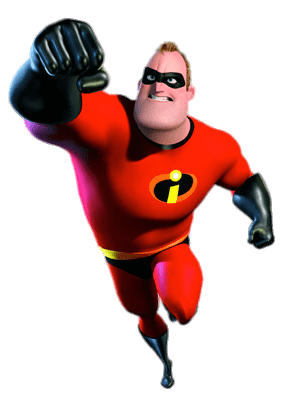

Mr. Increible, llamado Bob Parr, al igual que elastic girl, era el superheroe de la época, era el mejor de todos, el más famoso, el más amado, si alguien tenía un problema acudía a él sin pensarlo. Era el superheroe más increible que podía existir, siempre ganaba en contra del mal, por esta razón tiene el nombre de "Mr. Increible". Durante sus aventuras en contra del crimen conoció a elastic girl quién sería el amor de su vida y la persona con las que compartiría sus aventuras. Luego de que salió la ley que decía que los superheroes eran ilegales el, por obvias razones, tuvo que poner a un lago esta gran parte de su vida e iniciar a tener un aburrido trabajo siendo empleado de una empresa, cosa que se le dificultaba bastante porque él no quería dejar de ser un héroe.
